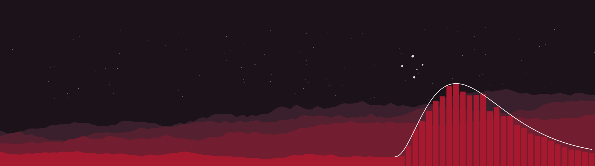
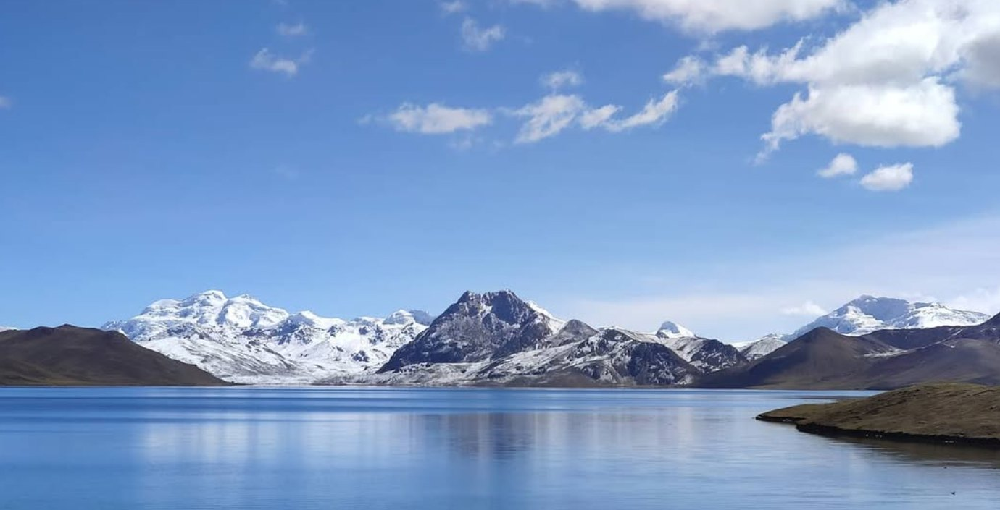
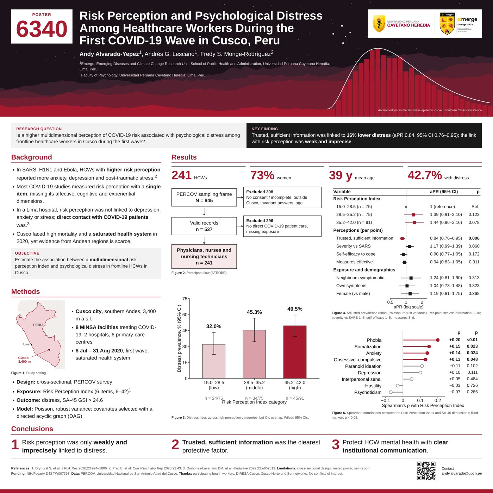
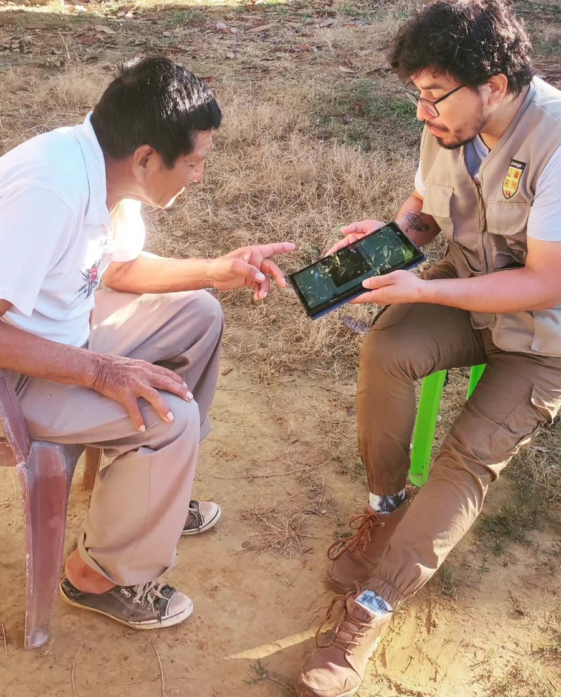

Risk perception in health emergencies
How health workers and students perceive epidemic threats and alerts, and how fear, stress and trust in information relate to their mental health.

Psychologist & Epidemiologist · Universidad Peruana Cayetano Heredia
I study how epidemics and climate hazards shape mental health in Peru, from the risk perceptions of frontline health workers to the effects of heat and drought on young people in the Andes.
I am a psychologist by training and an epidemiologist by graduate study, born in Cusco. My work connects psychological science with epidemiological methods to understand how people, and especially health workers and adolescents, experience and respond to health emergencies and environmental change.
I am part of Emerge, the Emerging Diseases and Climate Change Research Unit at Universidad Peruana Cayetano Heredia (UPCH), and I collaborate with the CLIMA group on climate and health research.

Climate change is reshaping the Andes, and with it the health and well-being of the people who live there.
Photo: Andy Alvarado-Yepez

Andy Alvarado-Yepez, Andrés G. Lescano, Fredy S. Monge-Rodríguez
My work combines epidemiological surveys with fieldwork alongside communities and health workers across Peru.

How health workers and students perceive epidemic threats and alerts, and how fear, stress and trust in information relate to their mental health.
Effects of extreme heat, drought and water insecurity on mental health and cognition, with a focus on adolescents in rural southern Peru; plus meteorosensitivity and psychological health.
Perceptions, motivation and vaccination behaviour in the face of misinformation among university students, and prebunking as a way to build resilience.
Research on extreme heat in school settings and its effects on children and adolescents.
Risk perception, fear and stress in response to epidemiological alerts among health students and professionals.
An interfaculty study of university students that tests prebunking strategies.
A systematic review of measurement, determinants and mental health outcomes.
Drought and household water insecurity as exposures for mental health and neurocognitive outcomes in rural southern Peru.
I am open to collaborations on mental health in health emergencies, climate and health, and risk communication in Latin America.